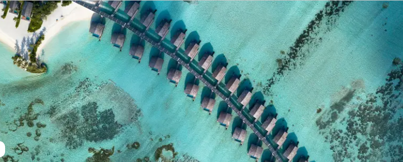
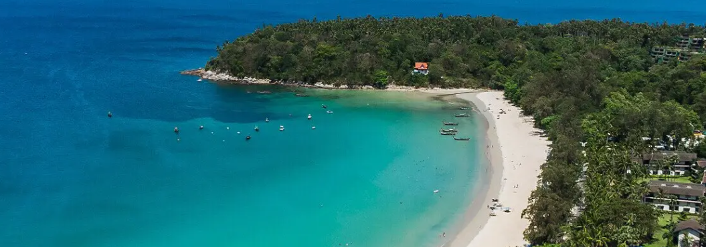

| ID | Photo | Desc | |
|---|---|---|---|
| 馬爾地夫 |  |
飛行時間: 台北-新加坡4.5小時&新加坡-馬列1.5小時(需轉機一次,此飛行方式僅供參考) 目的地機場: 馬列機場 時差: 馬爾地夫時間慢台灣-3小時 當地貨幣: 盧菲亞 (MVR) 最佳旅遊月份: 一月-四月 眾所皆知: 世界上最美的沙灘海洋 官方語言: 廣泛使用的迪維希語和英語 |
|
| 北海道 |
位於北海道的Club Med Kiroro Grand度假村 絕對顛覆您以往的日本滑雪印象， 給您更完美的優質假期體驗 從新千歲機場車程約1小時30分鐘；約40分鐘即可抵達小樽市區 令人著迷的北海道亞洲粉雪每年冬季吸引許多在地及外國遊客前來 |
||
| 普吉島 |  |
泰國普吉島南部的卡塔灣內 是個充滿文化與在地特色的度假島嶼 最適合與家人摯愛一同造訪體驗亞熱帶的法式海島度假風情 |